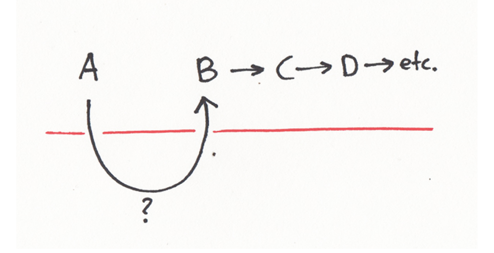
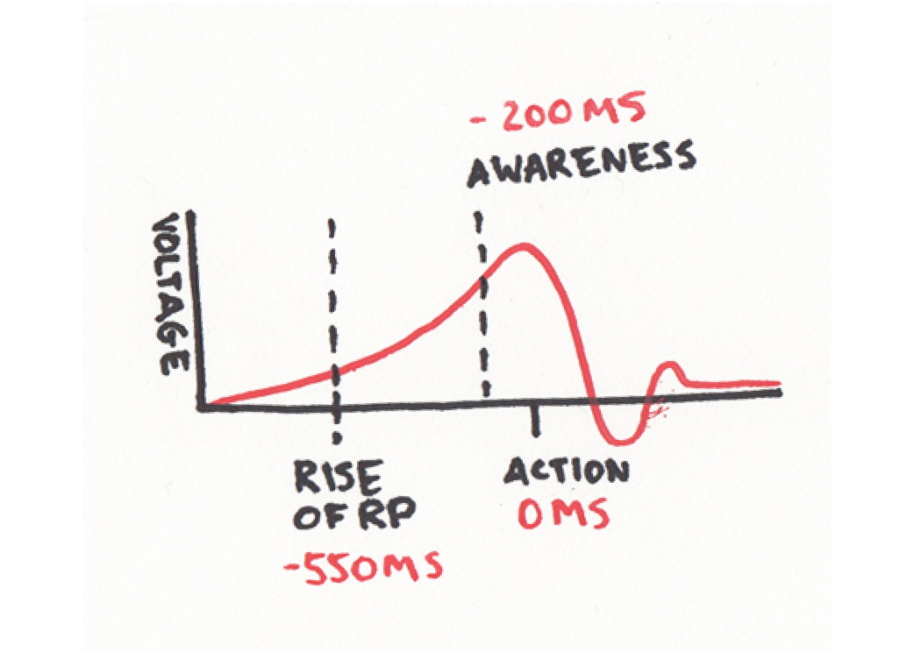
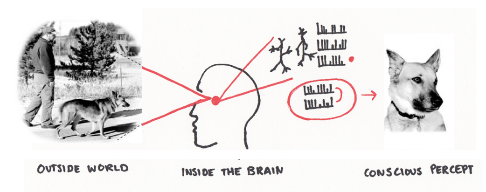

Nowadays, graphic design education places great emphasis on the conceptual and theoretical aspects of design. However, this rarely results in a real design (strategy) positioned in our reality. I have the desire to implement my designs in the real world and see if my ideas actually work.
Therefore, I researched the way graphic design is applied in practice.
How can you, as a graphic designer, generate a positive effect in the real world with your design skills?
To have an impact, designers should put our design ideas out there, in the real world, and see what happens. To answer this question, I have conducted literature research and interviewed experts. I analyzed different (graphic design) projects and compared these case studies. The results of my research is presented in two sections: a theoretical section and a section where I analyze four case studies.
A group of adolescents wander around a city. They talk about very complicated and substantial matter. It is hard to follow what they are actually talking about. They give the impression that they are highly intellectual and very well informed. All of a sudden an old man attracts their attention. The man is sitting in a 3-meter high pole. The group looks up and ask the man how and why he ended up there. “Well, I am not sure.” There is a moment of silence after which the guys ask the man if they could help him getting down again. The man hesitates but answers: “I don’t think so.” The guys look confused, take a moment and decide to continue walking. After a while, one of the guys says:
“No worse than us. He is all action, no theory. We are all theory and no action.” Quote from the movie Waking Life, Linklater, Ricahrd, 2011, USA
| Theory | Action |
|---|---|
| Ratio | Reaction |
| Immaterial | Provocation |
| Academic | Physics (Newton) |
| Repeatable experiments | Physical (Sports) |
| Falsifiable theories | Performative |
| Contemplation | Activism |
| Formulation | Impulse |
| Academic | Physics (Newton) |
| Language barrier | Intuition |
| Hypothetical approach | Personal experience |
| Assumptions | Emotions |
When talking about the relationship between thinking and doing, I would like to examine the process within our own bodies. The following question can be asked:
As I am typing this text I do not experience the physical chain of actions needed to make my fingers move across the keyboard. It feels automated. Something that is not tangible (my thoughts about the text I want to write down) is translated to a physical action (movement of my fingers on the keyboard). What happens exactly between those two events?
Deepak Chopra (1947), a doctor and expert in the field of mind-body healing, talks about this mysterious gap between a thought and an action in his book Quantum HealingQuantum Healing, Exploring the Frontiers of Mind / Body Medicine, Bantam, 1989. Chopra mentions the discovery of neuropeptides. Neuropeptides are small protein-like molecules used by neurons to communicate with each other. Wikipedia search 'Neuropeptide' Chopra visualizes the mystery between a thought and an action in the following diagram:
Point A represents a thought, all the other letters represent physical actions that follow from point A. For example, point A is my thought on what to write down. This thought somehow leads to the activation of neurons that make my fingers move in a specific way across the keyboard and translate my thought to letters appearing on my computer screen. As Chopra explains:
“All the physical changes that take place in the body can be connected in a logical chain of cause and effect, except for the space after A. This is the point where the transformation from thought to matter first occurs and it must occur, or the rest of the events will not happen.” Page 96, Quantum Healing, Exploring the Frontiers of Mind / Body Medicine
Chopra does not give the answer to the question what makes a thought translate into an action. He emphasizes the importance of the transformation of the immaterial thought to the material action.
Whereas Chopra focuses on the mysterious connection between mind and body philosopher Réne Descartes (1596-1650) states that mind and body are separable. The mind can exist outside of the body, and the body is an entity that cannot think. This view is known as Cartesian dualism. The word Cartesius is the Latin translation of the name Descartes. Descartes is famous for his quote “Cogito ergo sum” which means: I think, therefore I am. Descartes sees the mind as consciousness and the physical brain as the source of intelligence.
“Although I have a body that is joined very closely to me, since I have on the one hand a clear and distinct idea of myself insofar as I am a thinking, non-extended thing and, on the other hand, I have a distinct idea of the body insofar as it is merely and extended, non-thinking thing, it is certain that I (that is, the mind) am really distinct from my body and that I can exist without it.” Page 97, Descartes, René, Meditations, What is a human being?, Penguin Group, 2010
Opposite to this dualistic view is monism. Monism is a theory that proposes that the brain and the mind are the same thing. There are several types of MonismWikipedia search 'Monism' monism. I would like to highlight three of them.
Referring back to Chopra’s diagram an important question could be asked: What comes before point A? What if an action actually leads to the thought represented by point A?
As human beings we have basic instinctual behaviors. These are called fixed action patterns, also known as FAP’s. a FAP is a sequence of unlearned acts that are a reaction to certain stimuli. It is not a learned behavior; it is a hard-wired behavior. Wikipedia search 'Fixed action pattern'
For example, a newborn baby will automatically grab on to any object that is given. Nobody taught the baby to do this. In addition, newborns have been found to grasp hair more firmly than other objects. If you take steps back in the evolution of the humankind and observe modern-day primates, you’ll see that baby monkeys are hard-wired to hold on tight to their furry mothers. Pomeroy, Ross, 3 November 2011, Fixed Action Patterns and Their Human Manifestations As a newborn baby acts before thinking, you could say action is of great importance when it comes to the existence and survival of humankind.
By measuring the brain activity of volunteers who had been told to make a spontaneous movement, Scientist Benjamin Libet (1917-2007) discovered that conscious decisions to act are preceded by an unconscious buildup of electrical activity within the brain. Wikipedia search 'Benjamin Libet' Volunteers were asked to note down the moment they became aware of the action they needed to make. While there was a delay measured between the urge to move and the movement itself, an other signal was measured. The brain got active before the volunteers were aware of the physical action that had to be taken. This is called the readiness potential (RP). Ananthaswamy, Anil, 6 August 2012, Brain might not stand in the way of free will Libet’s experiment shows that unconscious processes in the brain are the true initiator of conscious acts, and free will therefore plays no part in their initiation.
The above figure visualizes the experiment of Libet. Our RP rises 350 milliseconds before we are actually aware of the action we are going to take. And 550 milliseconds before we actually take action.
If unconscious brain processes have already taken steps to initiate an action before consciousness is aware of any desire to perform it, you could conclude action is the ground force for our thoughts. It is in our nature to take action.
Where I examined different ideas on the relationship between our bodies and minds in the first chapter, I would like to look into our personal relationship with the outside world. Our physical bodies are the sensory apparatuses that make it allow us to perceive the world. During our lives we build up a database of references that are based on previous experiences. The more you experience, the bigger your database of references will be.
As a designer it is necessary to be informed about the current society. Real life experiences lead to a more sophisticated perception of the real world. It will help you as a designer to position yourself within the society. Going out there, in the real world, trains your ability to anticipate, provoke, react, criticize and imagine. It enables you to come up with refreshing design solutions that might add something valuable to our society.
"Ideas are like steam that condenses into water upon touching the level of reason and logic." Dubuffet, Jean, Anticultural Positions, 1951 Lecture, The Arts Club of Chicago
-
Jean Dubuffet
To position yourself in the outside world you need a language to communicate with others. As designers it comes natural to translate the perceived input from our surroundings into creative output. One of the steps of the creative process is giving shape to first ideas. As designers this most probably will be sketches, keywords and other forms of visualizations. Language is a powerful tool that enables to place ideas from our individual mind into a broader context: our reality. By language I am not only talking about verbal language. Painters use paint and brushes, poets use written words, mathematics use formulas, graphic designers use typography, etc.
By being able to communicate with others about your ideas, your ideas become something ‘real’ within a shared context. As Yuval Noah Harari explains in his book Sapiens: A Brief History of Humankind the linguistic abilities gave humankind the opportunity to rule the world for over 70,000 years.
“What, then, is so special about our language? The most common answer is that our language is amazingly supple. We can connect a limited number of sounds and signs to produce an infinite number of sentences, each with a distinct meaning. We can thereby ingest, store and communicate a prodigious amount of information about the surrounding world.”
-
Yuval Noah Harari
Where a meerkat is just able to warn other meerkats for danger, a modern human is in addition able to explain the problem to other people and discuss possible solutions.
Although our linguistic abilities are very useful for communicating with others, we have to stay aware of the limits of this tool. As Jean Dubuffet states in his lecture Anticultural Positions:
“…our culture is based on complete trust in language (particularly written language) and on a belief in its capacity to translate and elaborate thought. Now this strikes me as a mistake. Language, I find, is a gross, extremely gross stenography, a system of highly rudimentary algebraic signs, damaging rather than serving thought.” Dubuffet, Jean, Anticultural Positions, 1951 Lecture, The Arts Club of Chicago
The better you are able to formulate your ideas, the better you are able to communicate this to others. This means, the size of your vocabulary defines your ability to express your thoughts and concepts.
As a designer or artist you have the advantage of not being only limited to written or spoken words. By training your creative skills, you enlarge your design vocabulary. The ability to visualize your ideas gives you the advantage to convey a message as precise as possible. It gives you the possibility to adjust your design proposals according to specific clients. It makes it easier for you to explain your concepts to the outside world. The bigger your vocabulary, the easier it is to explain your concepts to the outside world.
As a graphic design student at the Royal Academy of Art The Hague you are educated to become “a critical thinker and versatile practitioner who can develop outstanding concepts for visual communication”. Student profile Graphic Design at the Royal Academy of the Arts, The Hague Furthermore you are asked to reflect on "the social responsibilities of a contemporary designer, tackle challenges posed by the rapidly evolving new-media landscape, and seek answers to the problems of tomorrow.” In other words, you work with big topics that are beyond the walls of the academy. This leads often to artistic concepts that are fictive and hypothetical. Those ideas can be refreshing and eye opening. However, in school it rarely comes to a real design (strategy) positioned in our reality. Of course the process of creating a hypothetical design is useful training to get your head around complicated matter. But what concrete impact does this form of design have in our ‘real’ world?
Intellect is an important tool to be able to position yourself within a discourse. But solely formulating your opinion is not the most effective way of having impact. It is valuable to be able to verbalize why you either agree or disagree with a certain view, but the power lays within creating an alternative.
“You are too highly educated to know what is right.”
-
Quote from the movie
Nothing PersonalNothing Personal, Antoniak, Urszula, 2009, USA
Creative ability seems related to intellect. People with a high IQ are most likely also creative. bron According to Jordan Peterson there is more to it than intellect. When getting an assignment, you will be triggered and come up with a certain amount of ideas. The first ideas will be very closely associated with the initial assignment. These first ideas will lead to more distanced ideas which are measurable as creative.
“For something to be creative it has to be novel and useful at the same time [...] If it is too novel nobody can understand it and it is unlikely to be useful. There is a range of convenience.” tmcleanful, 2017, May 21, Jordan Peterson on How Creative you are
Peterson states that a good creative response is unexpected and at the same time useful. The more probable your response, the less creative it is. This all has to do with originality which can be measured by the improbability of your ideas. Next to creative thought you have creative achievement. As Peterson explains, creative achievement means to take original ideas and actually implement them in the world.
Formulating your ideas is not always enough to generate a positive effect. A certain level of intellect helps you to formulate concepts. But implementing your ideas will have a greater impact in the real world.
To sum up, we should place our designs in the real world because taking action is in our nature. Next to that, going out there leads to a more sophisticated perception of our society, it makes designers able to position themselves within the society and it trains design skills that enables designers to add something valuable to the world around them.
As this paper is a case for applied graphic design, I would like to explore the aspects of applied graphic design by four case studies.
content here
content here
content here
content here